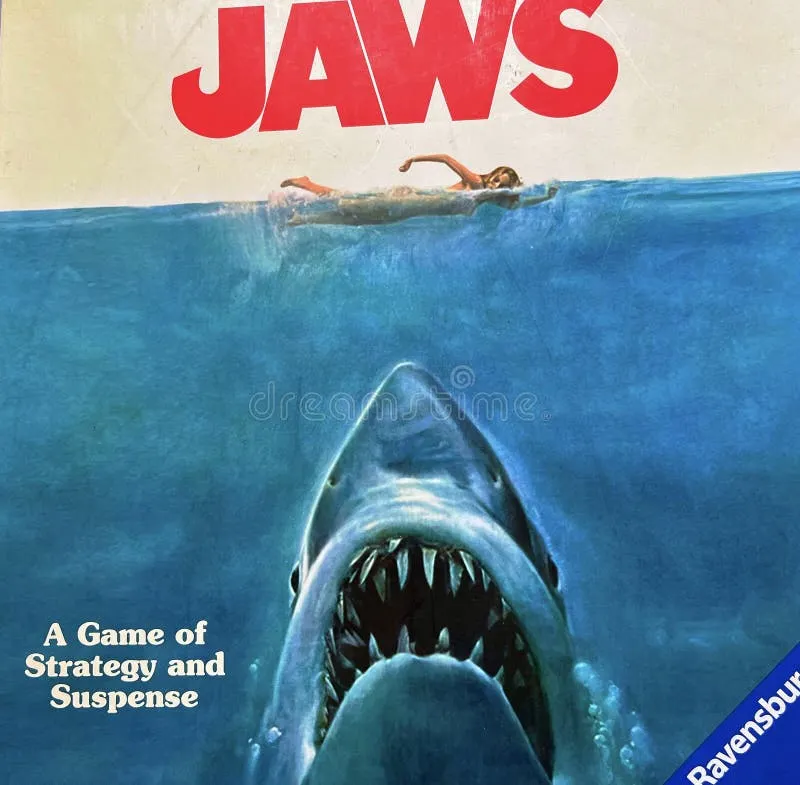

Tubarão
Tubarão, filme de Steven Spielberg, é considerado o melhor filme de tubarão de todos, com uma nota de 8,1 no IMDb
SINOPSE:
•Na pacata Amity Island, uma série de ataques de tubarão aterroriza a praia bem no início da temporada de verão. Enquanto o prefeito tenta proteger o turismo, o chefe de polícia Brody se une ao oceanógrafo Hooper e ao caçador Quint para enfrentar a ameaça no mar
ELENCO:
| Atores |
Roy Scheider |
Robert Shaw |
Richard Dreyfuss |
Lorraine Gary |
Murray Hamilton |
Carl Gottlieb |
| Diretor |
Steven Spielberg |
| Trilhas sonoras |
Main Title |
Chrissie's Death |
Promenade |
Out To Sea |
